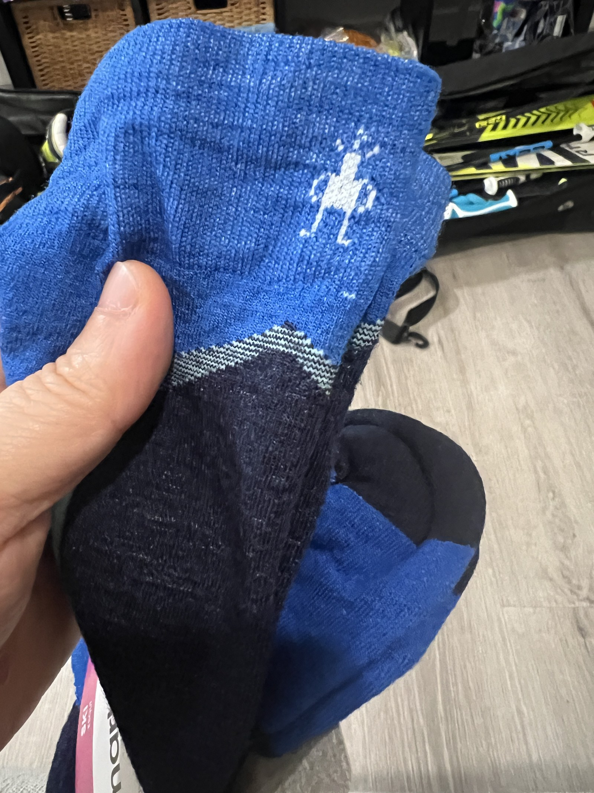
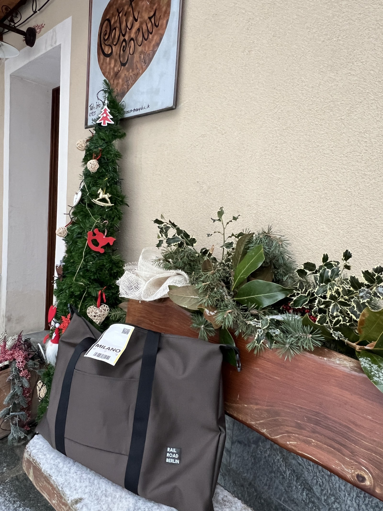

SANKIT
산킷
스키 양말, 개장 전에 한 번만
두꺼운 양말이
더 따뜻하지
않습니다
2026.11.26 · 산킷
ⓒ SANKIT
SANKIT
산킷
KIT 070
REI가 면 양말에 대해 쓴 문장
"Just say no."
미국 아웃도어 협동조합 REI의 장비 안내서는 스키 양말 재질을 설명하면서 면에 대해 딱 저렇게 적어 뒀습니다.
그냥 안 된다
는 뜻입니다.
이유는 간단합니다. 면은 울이나 합성섬유 같은
수분 배출 기능이 없어 마르는 데 훨씬 오래 걸립니다.
발에서 난 땀이 하루 종일 양말에 남아 있다는 말이고, 젖은 양말은 체온을 가져갑니다.
메리노 울
젖어도 보온
냄새에도 강하다
합성섬유
보온 + 수분 배출
기능·내구성은 울과 비슷
면
쓰지 않는다
SANKIT · 070
REI Expert Advice
SANKIT
산킷
KIT 070
두께에 대한 흔한 오해
두꺼운 양말이
반드시 더 따뜻한
건 아닙니다
REI는 쿠션 양을
없음 · 약 · 중 · 강
네 단계로 나눕니다. 그리고 두께와 보온은 비례하지 않는다고 못 박습니다.
오히려 경고가 붙습니다.
너무 두꺼운 양말은 혈액순환을 제한할 수 있습니다.
특히 꽉 맞는 부츠와 함께라면요. 발이 시린 이유가 양말이 얇아서가 아니라
두꺼워서
일 수 있다는 뜻입니다.
부츠는 발을 감싸서 잡아 주는 물건입니다. 양말은 그 사이를 메우는 게 아니라, 방해하지 않는 쪽이 맞습니다.
SANKIT · 070
REI Expert Advice
SANKIT
산킷
KIT 070
살 때 볼 것 세 가지
길이 · 솔기 · 핏
길이
무릎까지
부츠 앞면이 정강이를 누르는 통증을 막아 준다
솔기
평평하거나 안으로 짜 넣은 것
발가락 물집이 잘 생긴다면
핏
꼭 맞게
특히 발 부분 — 남으면 뭉치고, 뭉치면 물집
스키 양말이 유난히 긴 데는 이유가 있습니다. 부츠 앞쪽이 정강이를 때리거나 누르는 걸 막아 주기 때문입니다.
짧은 양말에 긴 부츠는 맞지 않습니다.
발 쪽이 헐렁하면 주행 중에 양말이 밀려 접힙니다. 그 접힌 자리가 저녁에 물집이 됩니다.
SANKIT · 070
REI Expert Advice

SANKIT
산킷
가방 싸기 전에
서랍부터
열어 보세요
산킷 한 줄
— 작년 양말이 면이었는지, 발 쪽이 늘어났는지만 보면 됩니다. 장비는 다 챙기면서 양말만 아무거나 집어넣는 분이 많습니다. 하루 종일 발에 닿아 있는 유일한 물건인데요.
ⓒ SANKIT